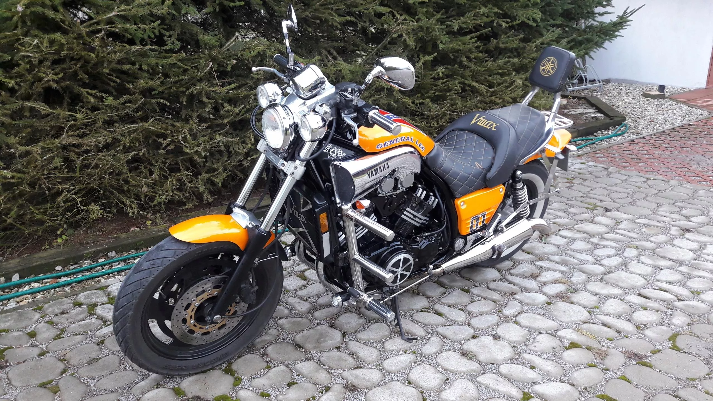

- Typ: czterosuw, chłodzony cieczą
- Średnica x skok tłoka: 76 x 66 mm
- Stopień sprężania: 10,5: 1
- Moc maksymalna: 107 kW (145 KM) przy 8700 obr./min
- Maksymalny moment obrotowy: 122 Nm przy 7500 obr./min
Yamaha V-Max 1200 to kultowy motocykl klasy power cruiser (dawniej określany jako Drag Bike) produkowany przez japoński koncern Yamaha Motor Company w latach 1991-2004. Sukces sprzedażowy i ogromna popularność modelu to zasługa czterech osób: projektanta Atsushiego Ichijo, kierownika projektu Akiry Arakiego, Eda Burke’a i Johna Reeda. V-Max 1200 szybko zdobył duże uznanie motocyklistów i krytyków, o czym świadczy np. tytuł Motocykla Roku przyznany przez poczytne czasopismo Cycle Guide, przyznany Yamasze jeszcze w roku premiery. Yamaha V-Max 1200 została wyposażona w czterocylindrową jednostkę napędową w układzie widlastym o pojemności skokowej 1198 ccm. Chłodzony cieczą silnik czterosuwowy generuje moc maksymalną 102 KM i maksymalny moment obrotowy 115 Nm, które trafiają na tylne koło za pośrednictwem mokrego sprzęgła wielotarczowego, wału napędowego i manualnej skrzyni biegów o pięciu przełożeniach. Yamaha V-Max 1200 robiła wrażenie przede wszystkim drastycznym przyspieszeniem, choć prędkość maksymalna ponad 220 km/h również zasługuje na uwagę.